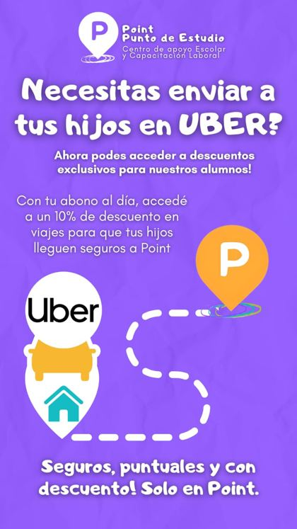
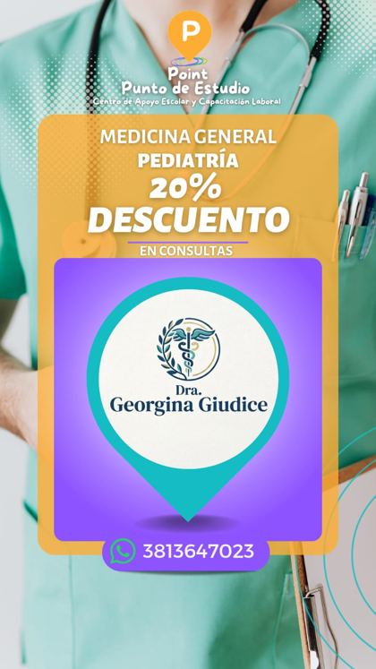

No somos un profe que enseña todo.
Somos un equipo de docentes especializados en cada área. Cada alumno aprende a su ritmo, con contención y acompañamiento real, en nuestras 3 sedes de Tucumán o desde cualquier lugar del país.
¿Qué ofrecemos?
Clases con profes que saben de lo suyo, para todas las edades.
Apoyo escolar
Primaria y secundaria: todas las materias, previas, evaluaciones y tareas.
Ver más →Tutorías universitarias
Lengua y literatura, Matemática, Inglés y Contabilidad.
Ver más →Inglés
- Cursos con certificado nacional e internacional
- Diplomaturas en inglés: turismo, enfermería y contabilidad
- Taller de fonética
Capacitación laboral
Contabilidad para emprendedores, programación, belleza de uñas, camareros y más.
Ver más →Gabinete pedagógico
Pedagoga, psicóloga y fonoaudióloga para acompañar cada proceso de aprendizaje.
Ver más →Point-Fit
Entrenamiento funcional online para adultos: más energía y mejor movilidad.
Ver más →Ahora también online
Con el aula virtual de Point tenés tus clases en vivo, las grabaciones y las tareas de cada profe en un solo lugar. Ideal si estás fuera de Tucumán.
Círculo Point
Nuestro programa de descuentos: por ser parte de Point accedés a 2x1 en cine, descuentos en viajes en Uber, salud, óptica y comercios adheridos.



Nuestras sedes
Clases presenciales en tres puntos de Tucumán.
¿No sabés por dónde empezar?
Escribinos por WhatsApp y te asesoramos. ¡Estamos para ayudarte!